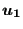
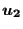
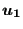
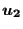
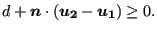

Next: Two-node 3-dimensional dashpot (DASHPOTA) Up: Element Types Previous: Three-node network element (D) Contents
This is a standard gap element defined between two nodes. The clearance  of
the gap and its direction
of
the gap and its direction
 are defined by using the
*GAP card. Let the
displacement vector of the first node of the GAPUNI element be
 and
the displacement vector of the second node
. Then, the gap
condition is defined by (Figure 77):
are defined by using the
*GAP card. Let the
displacement vector of the first node of the GAPUNI element be
 and
the displacement vector of the second node
. Then, the gap
condition is defined by (Figure 77):
|  | (13) |